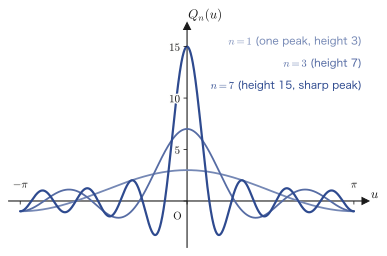
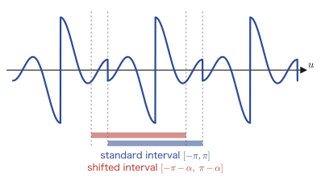
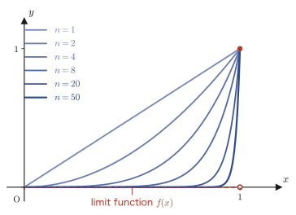
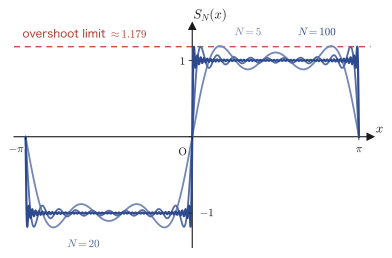

Chapter 29Convergence Theory of Fourier Series
In Chapter 28, for a periodic function $f(x)$ we computed the Fourier coefficients $C_k$ (or $a_k,b_k$) and built the formal series
$$ f_n(x)=\sum_{k=-n}^{n}C_k\,e^{i\frac{k\pi}{L}x} $$However, so far we have merely “built a series.” We have not yet answered the following two questions.
- Does this $f_n(x)$ really approach the original $f(x)$ as $n\to\infty$?
- Even supposing that it does, what on earth does it approach at a point where $f(x)$ jumps (a point of discontinuity), when the value of $f(x)$ itself is not determined there (the values on the left and on the right differ)?
This chapter answers these two questions head-on. We have two main tools. The first is the fact that an integral such as $\int f(x)\sin\alpha x\,dx$, which appears in the Fourier coefficients, is an “integral in which the frequency keeps getting higher” and actually tends to $0$ (the Riemann–Lebesgue lemma, Section 29.1). The second is an argument that rewrites the partial sum $f_n(x)$ as a convolution with a function called the “Dirichlet kernel,” and then uses the Riemann–Lebesgue lemma to determine what the series converges to (Fourier's theorem, Section 29.2). Finally, we distinguish two different meanings of the very word “converges”—pointwise convergence and uniform convergence (Section 29.3). This is also the first serious application of the $\varepsilon$-$N$ argument, the language that expresses “getting arbitrarily close” in formulas, which you meet for the first time in university mathematics.
- The statement of the Riemann–Lebesgue lemma, and its complete proof using the equal partition of an interval, the triangle inequality, and the $\varepsilon$-$N$ argument
- The technique of rewriting the partial sum $P_n(\alpha)$ of a Fourier series as an integral (a convolution) with the Dirichlet kernel $Q_n(u)=\sin\!\left(\left(n+\frac12\right)u\right)/\sin\frac{u}{2}$
- The fact that the value of an integral of a periodic function does not change when the interval of integration is shifted by the same length (replacing the interval of integration by means of periodicity)
- Fourier's theorem: the Fourier series of a piecewise smooth periodic function converges to $f(x)$ at points of continuity and to the average of the left and right limits $\dfrac{f(x+0)+f(x-0)}{2}$ at points of discontinuity, together with its complete proof
- The difference between the definitions of pointwise convergence and uniform convergence (the difference in the order of the quantifiers $\forall x$ and $\exists N$ in the $\varepsilon$-$N$ argument)
- A concrete example that converges pointwise but not uniformly ($f_n(x)=x^n$), and the theorem that the limit of a uniformly convergent sequence of continuous functions is continuous
- Digression: the “Gibbs phenomenon” that appears in the Fourier series of a square wave—the phenomenon in which the partial sums overshoot the true value near a point of discontinuity
Source notes: Yasuhide Mochizuki, Mathematics Notes: Fourier Series and Transforms, pp. 15–20.
29.1 The Riemann–Lebesgue Lemma
Let us take a fresh look at the Fourier coefficients $C_k=\dfrac{1}{2\pi}\displaystyle\int_{-\pi}^{\pi}f(t)e^{-ikt}\,dt$ (Chapter 28). If we fix $k$ and compute the integral, we simply get a number, but we can also ask, “What happens to $C_k$ as we make $k$ larger and larger?” For example, if we compute $\displaystyle\int_0^{\pi}x\sin(nx)\,dx$ for $n=1,2,3,\dots$, the sign alternates between plus and minus, yet the magnitude keeps getting smaller—this is no accident. The larger $n$ is, the more rapidly $\sin(nx)$ oscillates within the interval $[0,\pi]$, with crests and troughs packed closely side by side. Since $x$ itself changes only slowly, the positive area contributed by each crest and the negative area contributed by the neighboring trough almost cancel each other. The goal of this section is to state precisely, and to prove, this fact that “an integral against a rapidly oscillating function approaches $0$” for an arbitrary piecewise continuous function $f(x)$ (a function that is continuous except at finitely many points and whose left and right limits both exist even at its points of discontinuity; we defined it in Chapter 28).
Theorem 29.1: The Riemann–Lebesgue lemma
If $f(x)$ is a piecewise continuous function on the closed interval $a\le x\le b$, then the following hold.
\begin{equation} \text{(I)}\ \lim_{\alpha\to\infty}\int_a^b f(x)\sin\alpha x\,dx = 0, \qquad \text{(II)}\ \lim_{\alpha\to\infty}\int_a^b f(x)\cos\alpha x\,dx = 0. \label{eq:29-RL} \end{equation}The skeleton of the proof is as follows. Divide the interval $[a,b]$ finely, and regard $f(x)$ as almost constant within each subinterval. Then the integral can be approximated by a collection of integrals of the form “constant $\times\sin\alpha x$,” and these are easy to estimate when $\alpha$ is large. What remains is to show that the error incurred by treating the function as almost constant is small.
Proof (case (I))
Since $f(x)$ is a piecewise continuous function that takes finite values on the interval $a\le x\le b$, it has a maximum value there (more precisely, a supremum). Letting $M=\max\{\abs{f(x)}\}$, we have
$$ \abs{f(x)}\le M \qquad (a\le x\le b) $$for every $x$ in the interval. Next, as in Figure 29.1, take the points
$$ a=x_1 \lt x_2 \lt \cdots \lt x_n \lt x_{n+1}=b $$that divide the interval $[a,b]$ into $n$ equal parts. Letting $\Delta x=x_{k+1}-x_k$ ($k=1,2,\dots,n$) denote the width of each subinterval, all the subintervals have the same width, so $b-a=n\,\Delta x$ holds.
Here is the key point of the proof. Since it is difficult to estimate the integral over the whole interval $[a,b]$ at once, we split it into $n$ subintervals and rewrite it as a sum (additivity of the integral over intervals).
$$ \int_a^b f(x)\sin\alpha x\,dx = \sum_{k=1}^{n}\int_{x_k}^{x_{k+1}} f(x)\sin\alpha x\,dx $$In each term, we write the integrand $f(x)$ as the sum of its value $f(x_k)$ at the left endpoint of the subinterval (a constant) and the deviation $f(x)-f(x_k)$ from that value. This is the identity $f(x)=\{f(x)-f(x_k)\}+f(x_k)$, obtained simply by adding and subtracting the same quantity.
$$ = \sum_{k=1}^{n}\int_{x_k}^{x_{k+1}} \Big[\{f(x)-f(x_k)\}+f(x_k)\Big]\sin\alpha x\,dx $$Since the integral is linear with respect to sums ($\int(A+B)=\int A+\int B$), the sum inside the integrand can be split directly into a sum of two integrals. Taking absolute values and using the triangle inequality $\abs{A+B}\le\abs{A}+\abs{B}$ both within each subinterval and in the sum over the subintervals, we obtain
\begin{equation} \left|\int_a^b f(x)\sin\alpha x\,dx\right| = \left|\sum_{k=1}^{n}\left(\int_{x_k}^{x_{k+1}} \{f(x)-f(x_k)\}\sin\alpha x\,dx + \int_{x_k}^{x_{k+1}} f(x_k)\sin\alpha x\,dx\right)\right| \le \sum_{k=1}^{n}\left(\left|\int_{x_k}^{x_{k+1}} \{f(x)-f(x_k)\}\sin\alpha x\,dx\right| + \left|\int_{x_k}^{x_{k+1}} f(x_k)\sin\alpha x\,dx\right|\right) \label{eq:29-RL-split} \end{equation}We estimate the two kinds of terms on the right-hand side separately.
First term (the deviation term). The inequality $\abs{\sin\alpha x}\le1$ always holds (the value of the sine is at least $-1$ and at most $1$). Combining this with the fact that the absolute value of an integral is at most the integral of the absolute value of the integrand ($\left|\int g\right|\le\int\abs{g}$, which is also the integral version of the triangle inequality), we obtain
$$ \left|\int_{x_k}^{x_{k+1}} \{f(x)-f(x_k)\}\sin\alpha x\,dx\right| \le \int_{x_k}^{x_{k+1}} \abs{f(x)-f(x_k)}\cdot\underbrace{\abs{\sin\alpha x}}_{\le\,1}\,dx \le \int_{x_k}^{x_{k+1}} \abs{f(x)-f(x_k)}\,dx $$This means that we have estimated from above by replacing $\sin\alpha x$ by $1$.
Second term (the constant term). Since $f(x_k)$ is a constant that does not depend on $x$, it can be taken outside the integral. The remaining integral $\displaystyle\int_{x_k}^{x_{k+1}}\sin\alpha x\,dx$ can be computed explicitly (an antiderivative of $\sin$ is $-\cos/\alpha$).
$$ \left|\int_{x_k}^{x_{k+1}} \underbrace{f(x_k)}_{\text{constant}}\sin\alpha x\,dx\right| = \abs{f(x_k)}\cdot\left|\int_{x_k}^{x_{k+1}} \sin\alpha x\,dx\right| = \abs{f(x_k)}\cdot\left|\frac{1}{\alpha}\bigl(\cos\alpha x_{k+1}-\cos\alpha x_k\bigr)\right| $$Using $\abs{f(x_k)}\le M$ and the fact that the cosine also satisfies $\abs{\cos\theta}\le1$, the triangle inequality gives
$$ \le M\cdot\frac{1}{\alpha}\Bigl(\underbrace{\abs{\cos\alpha x_{k+1}}}_{\le\,1}+\abs{\cos\alpha x_k}\Bigr) \le \frac{2M}{\alpha} $$Substituting these two estimates back into Eq. \eqref{eq:29-RL-split}, we obtain
\begin{equation} \left|\int_a^b f(x)\sin\alpha x\,dx\right| \le \sum_{k=1}^{n}\left(\int_{x_k}^{x_{k+1}} \abs{f(x)-f(x_k)}\,dx + \frac{2M}{\alpha}\right) \label{eq:29-RL-mid} \end{equation}Up to this point we have fixed $n$ (the fineness of the partition) and made the estimates in terms of $\alpha$. The remaining task is to make the first term $\displaystyle\int_{x_k}^{x_{k+1}}\abs{f(x)-f(x_k)}\,dx$ small.
Intuition: Refining the partition makes $f(x)-f(x_k)$ small
Since $f(x)$ is continuous (except at points of discontinuity), if we bring $x$ close to $x_k$, then $f(x)$ comes arbitrarily close to $f(x_k)$. If we increase the number $n$ of subdivisions and narrow the width $\Delta x$ of the subintervals, then within each subinterval $x$ can move only near $x_k$, so $f(x)-f(x_k)$ can take only smaller and smaller values.
It is the $\varepsilon$-$N$ argument that states this precisely in terms of a formula (we use the wording learned in Chapter 1 exactly as it is). We write the statement “No matter what small positive number $\varepsilon$ (epsilon, the Greek letter conventionally used to denote a ‘small error’) we are given, if we take the number of subdivisions $n$ large enough (formally, there exists a natural number $N$ such that this holds whenever $n$ is larger than it), then within every subinterval $\abs{f(x)-f(x_k)}$ can be made smaller than that $\varepsilon$” as
\begin{equation} \forall\varepsilon\gt0,\ \exists N\in\N\ \text{s.t.}\ n\gt N \Rightarrow \abs{f(x)-f(x_k)}\lt\varepsilon\quad(\text{for all }x\text{ in each subinterval}) \label{eq:29-RL-epsN} \end{equation}Let us review how to read the symbols. $\forall$ is read “for all” (meaning “every”). $\exists$ is read “there exists” (meaning “there is”). $\N$ is the set of all natural numbers. “s.t.” is an abbreviation of “such that” (meaning “so that …”). Read out in words, the whole statement says: “For any positive number $\varepsilon$, there exists a natural number $N$ such that, if $n$ is larger than $N$, then $\abs{f(x)-f(x_k)}$ is smaller than $\varepsilon$.”
Proof (continued): Finishing with the $\varepsilon$-$N$ argument
By Eq. \eqref{eq:29-RL-epsN}, for a given $\varepsilon\gt0$, if we take the number of subdivisions to be $n=N$ (or larger), then $\abs{f(x)-f(x_k)}\lt\varepsilon$ holds in every subinterval. In that case $\displaystyle\int_{x_k}^{x_{k+1}}\abs{f(x)-f(x_k)}\,dx \lt \displaystyle\int_{x_k}^{x_{k+1}}\varepsilon\,dx=\varepsilon\,\Delta x_k$ (we first bounded the integrand from above by the larger constant $\varepsilon$ and then integrated). Substituting this into Eq. \eqref{eq:29-RL-mid} and using the fact that the sum of the $\Delta x_k$ is $\sum_{k=1}^n\Delta x_k=x_{n+1}-x_1=b-a$, we obtain
\begin{equation} \left|\int_a^b f(x)\sin\alpha x\,dx\right| \lt \sum_{k=1}^{n}\left(\varepsilon\,\Delta x_k+\frac{2M}{\alpha}\right) = \varepsilon(\underbrace{x_{n+1}}_{b}-\underbrace{x_1}_{a})+\frac{2Mn}{\alpha} = \varepsilon(b-a)+\frac{2Mn}{\alpha} \label{eq:29-RL-final} \end{equation}Note that the $n$ (that is, $N$) in this inequality is determined by $\varepsilon$ alone and does not depend on $\alpha$ at all. This is exactly why we can keep $n=N$ fixed and then consider the limit $\alpha\to\infty$ anew. If $N$ is fixed, $2MN/\alpha$ becomes arbitrarily small as $\alpha$ grows and approaches $0$. Therefore the right-hand side of Eq. \eqref{eq:29-RL-final} approaches $\varepsilon(b-a)$ as $\alpha\to\infty$.
Here $\limsup$ (“lim sup,” the limit superior) is the quantity defined by $\displaystyle\limsup_{\alpha\to\infty}g(\alpha):=\lim_{\alpha\to\infty}\Bigl(\sup_{\beta\ge\alpha}g(\beta)\Bigr)$; it is “a limit that is held down from above, so that it does not matter if the function oscillates wildly, and that can always be defined even at a stage when we do not yet know whether $\lim$ itself exists” (as $\alpha$ grows larger, $\sup_{\beta\ge\alpha}g(\beta)$ decreases monotonically or stays constant, so this $\lim$ itself always exists). Why do we use $\limsup$ here rather than the ordinary $\lim$? Because at this stage we have not yet proved whether the quantity $\left|\int_a^b f(x)\sin\alpha x\,dx\right|$ approaches a single value as $\alpha\to\infty$ (that is, whether the $\lim$ in the ordinary sense exists)—even so, the $\limsup$ lets us say with certainty that “for sufficiently large $\alpha$, whichever $\alpha$ we look at, the value does not exceed $\varepsilon(b-a)$ by much.” More precisely,
$$ \limsup_{\alpha\to\infty}\left|\int_a^b f(x)\sin\alpha x\,dx\right| \le \varepsilon(b-a) $$holds. Moreover, since $\varepsilon\gt0$ could be chosen arbitrarily from the start, the right-hand side of this inequality can be made as small as we like. The left-hand side is a quantity that does not depend on $\varepsilon$, so if it can be said to be smaller than $\varepsilon(b-a)$ for every $\varepsilon\gt0$, then the left-hand side must be exactly $0$. Hence we have shown that
$$ \lim_{\alpha\to\infty}\int_a^b f(x)\sin\alpha x\,dx = 0 $$∎
Caution: The same argument works for the cosine case (II)
The “Evidence” in the original notes treats only (I) (the sine case) in detail, but (II) (the cosine case) can be proved by exactly the same procedure. The only difference is that the computation of the second term now gives $\displaystyle\int_{x_k}^{x_{k+1}}\cos\alpha x\,dx=\dfrac{1}{\alpha}\bigl(\sin\alpha x_{k+1}-\sin\alpha x_k\bigr)$, and using $\abs{\sin\theta}\le1$ again gives the same estimate $\dfrac{2M}{\alpha}$. The rest of the argument carries over word for word once $\sin\alpha x$ is replaced by $\cos\alpha x$. Therefore $\displaystyle\lim_{\alpha\to\infty}\int_a^bf(x)\cos\alpha x\,dx=0$ also holds.
Using the complex exponential function, we can combine (I) and (II) into one statement and write $\displaystyle\lim_{\alpha\to\infty}\int_a^bf(x)e^{i\alpha x}\,dx=0$ (since $e^{i\alpha x}=\cos\alpha x+i\sin\alpha x$, we only need to apply (II) and (I) to the real part and the imaginary part, respectively). We will use this form as it is in Section 29.2.
Example 29.1: Direct computation of $\displaystyle\int_0^{\pi}x\sin(nx)\,dx$ and the Riemann–Lebesgue lemma
Let $n$ be a positive integer. (a) Explain why the Riemann–Lebesgue lemma lets us conjecture that $\displaystyle\lim_{n\to\infty}\int_0^{\pi}x\sin(nx)\,dx=0$. (b) Actually compute $\displaystyle\int_0^{\pi}x\sin(nx)\,dx$ by integration by parts, and confirm that the conjecture in (a) is correct.
Solution. (a) The function $f(x)=x$ is continuous on the closed interval $[0,\pi]$ (and hence also piecewise continuous), so Theorem 29.1(I) applies directly, and $\displaystyle\lim_{n\to\infty}\int_0^{\pi}x\sin(nx)\,dx=0$ should hold.
(b) Let $u=x$ and $dv=\sin(nx)\,dx$. Then $du=dx$ and $v=-\dfrac{\cos(nx)}{n}$. By the integration by parts formula $\displaystyle\int u\,dv=[uv]-\int v\,du$,
$$ \int_0^{\pi}x\sin(nx)\,dx = \left[-\frac{x\cos(nx)}{n}\right]_0^{\pi} + \frac{1}{n}\int_0^{\pi}\cos(nx)\,dx = -\frac{\pi\cos(n\pi)}{n} + \frac{1}{n}\left[\frac{\sin(nx)}{n}\right]_0^{\pi} $$Since $n$ is an integer, $\sin(n\pi)=0$, so the second term vanishes. Also, $\cos(n\pi)=(-1)^n$ ($1$ if $n$ is even, $-1$ if it is odd), so we obtain
$$ \int_0^{\pi}x\sin(nx)\,dx = \frac{\pi(-1)^{n+1}}{n} $$Therefore $\left|\displaystyle\int_0^{\pi}x\sin(nx)\,dx\right|=\dfrac{\pi}{n}\to0\ (n\to\infty)$, which agrees with the conjecture in (a). (Verified with SymPy: we confirmed that for $n=5,20,100$ the numerical integration agrees exactly with the exact value $\pi(-1)^{n+1}/n$.)
Example 29.2: Direct computation of $\displaystyle\int_{-\pi}^{\pi}x^2\cos(nx)\,dx$
Let $n$ be a positive integer. Compute $\displaystyle\int_{-\pi}^{\pi}x^2\cos(nx)\,dx$ and confirm that it converges to $0$ as $n\to\infty$. What can we say in comparison with the statement of the Riemann–Lebesgue lemma?
Solution. We use integration by parts twice. First, letting $u=x^2$ and $dv=\cos(nx)dx$ ($v=\sin(nx)/n$), we have
$$ \int x^2\cos(nx)\,dx = \frac{x^2\sin(nx)}{n} - \frac{2}{n}\int x\sin(nx)\,dx $$Applying integration by parts once more to the $\displaystyle\int x\sin(nx)\,dx$ on the right-hand side (with $u=x$, $dv=\sin(nx)dx$) gives $\displaystyle\int x\sin(nx)\,dx=-\dfrac{x\cos(nx)}{n}+\dfrac{\sin(nx)}{n^2}$, so
$$ \int x^2\cos(nx)\,dx = \frac{x^2\sin(nx)}{n} + \frac{2x\cos(nx)}{n^2} - \frac{2\sin(nx)}{n^3} $$Now we substitute the limits from $x=-\pi$ to $x=\pi$. Since $n$ is an integer, $\sin(n\pi)=\sin(-n\pi)=0$, so the first and third terms vanish at both the upper and the lower limit. Only the second term remains, and noting that $\cos(n\pi)=\cos(-n\pi)=(-1)^n$ (cosine is an even function), we obtain
$$ \int_{-\pi}^{\pi}x^2\cos(nx)\,dx = \left[\frac{2x\cos(nx)}{n^2}\right]_{-\pi}^{\pi} = \frac{2\pi(-1)^n}{n^2} - \frac{2(-\pi)(-1)^n}{n^2} = \frac{4\pi(-1)^n}{n^2} $$Therefore $\left|\displaystyle\int_{-\pi}^{\pi}x^2\cos(nx)\,dx\right|=\dfrac{4\pi}{n^2}\to0\ (n\to\infty)$, and we have confirmed that the integral converges to $0$, just as the statement of Theorem 29.1(II) asserts ($f(x)=x^2$ is continuous on $[-\pi,\pi]$, so the theorem applies). Moreover, the speed (order) of convergence is $1/n^2$, which is faster than the $1/n$ of Example 29.1—we can interpret this as follows: because $f(x)=x^2$ is smoother than $f(x)=x$ and its values change more gently, the cancellation against the oscillation works more strongly. (Verified with SymPy: we confirmed that for all of $n=1,2,3,5,10,50,200$ the value agrees with the exact value $4\pi(-1)^n/n^2$.)
29.2 Fourier's Theorem—Proof of Pointwise Convergence
Now we come to the main subject. We consider the partial sums of the complex Fourier series of period $2\pi$ defined in Chapter 28:
\begin{equation} P_n(\alpha):=\sum_{k=-n}^{n}C_k\,e^{ik\alpha}, \qquad C_k=\frac{1}{2\pi}\int_{-\pi}^{\pi}f(t)\,e^{-ikt}\,dt \label{eq:29-Pn-def} \end{equation}(Writing the point of evaluation as $\alpha$ rather than $x$ follows the notation of the original notes and has no special meaning. Note that the letter is reused here in a completely different role from that of the frequency $\alpha$ that we used in Section 29.1 in the limit “$\alpha\to\infty$”.) Let $f(x)$ be a piecewise smooth function of period $2\pi$ (a function for which both $f$ itself and $f'$ are piecewise continuous; see Chapter 28). What we want to know is $\displaystyle\lim_{n\to\infty}P_n(\alpha)$.
Theorem 29.2: Fourier's theorem
Let $f(x)$ be a piecewise smooth periodic function of period $2\pi$. Then the following holds for every $\alpha$:
\begin{equation} \lim_{n\to\infty}P_n(\alpha)=\lim_{n\to\infty}\sum_{k=-n}^{n}C_k\,e^{ik\alpha} =\begin{cases} f(\alpha) & (f\text{ is continuous at }\alpha\text{}) \\[4pt] \dfrac{f(\alpha+0)+f(\alpha-0)}{2} & (f\text{ is discontinuous at }\alpha\text{}) \end{cases} \label{eq:29-fourier-thm} \end{equation}Here $f(\alpha+0)=\displaystyle\lim_{u\to0+}f(\alpha+u)$ and $f(\alpha-0)=\displaystyle\lim_{u\to0-}f(\alpha+u)$ are the right-hand limit and the left-hand limit at $\alpha$, respectively. At a point of continuity the two one-sided limits coincide and equal $f(\alpha)$ itself, so in fact the lower line of the case distinction alone expresses both cases—the heart of this theorem is that at a point of discontinuity the series converges to the “average” of the left and right values.
Let us first state the strategy of the proof. We rewrite $P_n(\alpha)$ as an integral of $f$ against a function $Q_n(u)$ called the “Dirichlet kernel” (in mathematics, this kind of integral is called a convolution). We then transform $P_n(\alpha)-\dfrac{f(\alpha+0)+f(\alpha-0)}{2}$ and, finally, apply the Riemann–Lebesgue lemma (Theorem 29.1) to show that it approaches $0$.
29.2.1 $P_n(\alpha)$ and the Dirichlet kernel
Proof (Part 1): Rewriting $P_n(\alpha)$ in integral form
Substituting $C_k$ from Eq. \eqref{eq:29-Pn-def}, we get
$$ P_n(\alpha)=\sum_{k=-n}^{n}\left\{\frac{1}{2\pi}\int_{-\pi}^{\pi}f(t)\,e^{-ikt}\,dt\right\}\cdot e^{ik\alpha} $$Since $e^{ik\alpha}$ is a constant that does not contain the integration variable $t$, it may be moved inside the integral. Moreover, the sum is merely a sum of finitely many terms from $k=-n$ to $n$, so interchanging the sum and the integral does not change the value (for an infinite sum, an argument such as uniform convergence would be needed here, but for a finite sum the interchange is allowed unconditionally).
$$ =\frac{1}{2\pi}\sum_{k=-n}^{n}e^{ik\alpha}\int_{-\pi}^{\pi}f(t)\,e^{-ikt}\,dt =\frac{1}{2\pi}\int_{-\pi}^{\pi}f(t)\left\{\sum_{k=-n}^{n}e^{-ik(t-\alpha)}\right\}dt $$Now we make the substitution $t-\alpha=u$ (that is, $t=\alpha+u$). When $t:-\pi\to\pi$, we have $u:-\pi-\alpha\to\pi-\alpha$, and $dt=du$, so we obtain
$$ P_n(\alpha)=\frac{1}{2\pi}\int_{-\pi-\alpha}^{\pi-\alpha}f(\alpha+u)\left\{\sum_{k=-n}^{n}e^{-iku}\right\}du $$It is worth making one observation here. In the sum $\displaystyle\sum_{k=-n}^{n}e^{-iku}$, replacing $k$ by $-k$ does not change the range $\{-n,\dots,n\}$ over which the sum is taken (changing the sign merely runs through the same set), so
$$ \sum_{k=-n}^{n}e^{-iku}=\sum_{k=-n}^{n}e^{iku} $$holds (only the order of addition changes; the set of terms being added is the same). Now we define this sum as
\begin{equation} Q_n(u):=\sum_{k=-n}^{n}e^{iku} \label{eq:29-Qn-def} \end{equation}(this is the Dirichlet kernel). With this definition we can write
\begin{equation} P_n(\alpha)=\frac{1}{2\pi}\int_{-\pi-\alpha}^{\pi-\alpha}f(\alpha+u)\,Q_n(u)\,du \label{eq:29-Pn-conv} \end{equation}(End of Part 1; continued in Part 2.)
Proof (Part 2): Putting the Dirichlet kernel $Q_n(u)$ in closed form
Writing out the sum in Eq. \eqref{eq:29-Qn-def} explicitly, we get
$$ Q_n(u)=\sum_{k=-n}^{n}e^{iku}=e^{-inu}+e^{-i(n-1)u}+\cdots+e^{i(n-1)u}+e^{inu} $$This is the sum of a geometric sequence with first term $e^{-inu}$, common ratio $e^{iu}$, and $2n+1$ terms. Applying the formula for the sum of a geometric sequence that we learned in high school, $\displaystyle\sum_{j=0}^{2n}r^{j}=\frac{1-r^{2n+1}}{1-r}$ ($r\ne1$), with $r=e^{iu}$ (if $u\ne0$, then $r\ne1$), we obtain
$$ Q_n(u)=e^{-inu}\cdot\frac{1-\left(e^{iu}\right)^{2n+1}}{1-e^{iu}} =\frac{e^{-inu}-e^{i(n+1)u}}{1-e^{iu}} $$We multiply both the numerator and the denominator by $e^{-iu/2}$ (a trick to bring the denominator into the form of a $\sin$).
$$ Q_n(u)=\frac{e^{-inu}\cdot e^{-iu/2}-e^{i(n+1)u}\cdot e^{-iu/2}}{e^{-iu/2}-e^{iu/2}} =\frac{e^{-i\left(n+\frac12\right)u}-e^{i\left(n+\frac12\right)u}}{e^{-i\frac{u}{2}}-e^{i\frac{u}{2}}} $$Here we use the relation $\sin\theta=\dfrac{e^{i\theta}-e^{-i\theta}}{2i}$, which follows from Euler's formula ($e^{i\theta}=\cos\theta+i\sin\theta$, which we learned in Chapters 21 and 23). The numerator is $-\bigl(e^{i(n+\frac12)u}-e^{-i(n+\frac12)u}\bigr)=-2i\sin\!\left(\left(n+\tfrac12\right)u\right)$ and the denominator is $-\bigl(e^{iu/2}-e^{-iu/2}\bigr)=-2i\sin\dfrac{u}{2}$, so the minus sign and the $2i$ both cancel, and we obtain the following closed form (an expression that can be computed directly, rather than a sum of finitely many terms):
\begin{equation} Q_n(u)=\frac{\sin\!\left(\left(n+\frac12\right)u\right)}{\sin\dfrac{u}{2}}\qquad(u\ne0) \label{eq:29-Qn-closed} \end{equation}For $u=0$ the right-hand side of Eq. \eqref{eq:29-Qn-closed} becomes the indeterminate form $0/0$, but returning to the original definition, Eq. \eqref{eq:29-Qn-def}, we get $Q_n(0)=\sum_{k=-n}^n 1=2n+1$ (the number of terms is itself the value). Indeed, as $u\to0$ we have $\sin\!\left(\left(n+\frac12\right)u\right)/\sin\frac{u}{2}\to2n+1$ (which can be confirmed with l'Hôpital's rule, or from the fundamental limit $\lim_{\theta\to0}\sin\theta/\theta=1$), so $Q_n(u)$ is a continuous function, including at $u=0$. (End of Part 2.)

Example 29.3: The explicit form of the Dirichlet kernel $Q_3(u)$
Write $Q_3(u)=\displaystyle\sum_{k=-3}^{3}e^{iku}$ out explicitly as a sum of real parts only, and verify that at $u=\pi/2$ it agrees with the value given by Eq. \eqref{eq:29-Qn-closed}.
Solution. Noting that $e^{iku}+e^{-iku}=2\cos ku$ (by Euler's formula), we group the terms for $k=\pm1,\pm2,\pm3$ in pairs and obtain
$$ Q_3(u)=1+2\cos u+2\cos2u+2\cos3u $$(the term for $k=0$ is $e^{0}=1$). Substituting $u=\pi/2$, and using $\cos\frac{\pi}{2}=0$, $\cos\pi=-1$, and $\cos\frac{3\pi}{2}=0$, we get
$$ Q_3\!\left(\frac{\pi}{2}\right)=1+2\cdot0+2\cdot(-1)+2\cdot0=1-2=-1 $$On the other hand, from Eq. \eqref{eq:29-Qn-closed} we have $Q_3\!\left(\frac{\pi}{2}\right)=\dfrac{\sin\left(\frac{7}{2}\cdot\frac{\pi}{2}\right)}{\sin\frac{\pi}{4}}=\dfrac{\sin\frac{7\pi}{4}}{\sin\frac{\pi}{4}}=\dfrac{-\frac{\sqrt2}{2}}{\frac{\sqrt2}{2}}=-1$, which agrees. (Verified with numpy: for $n=1,3,7$ we confirmed that the real-part expansion and the closed form agree at random points as well. We also confirmed $\displaystyle\int_{-\pi}^{\pi}Q_n(u)\,du=2\pi$ by numerical integration for $n=1,3,7$.)
29.2.2 $\int_{-\pi}^{\pi}Q_n(u)\,du=2\pi$ and replacing the interval of integration
Proof (Part 3): Integrating $Q_n(u)$ from $-\pi$ to $\pi$
Returning to the definition, Eq. \eqref{eq:29-Qn-def}, we integrate term by term (since the sum is finite, term-by-term integration is allowed). For $k\ne0$, we have $\displaystyle\int_{-\pi}^{\pi}e^{iku}\,du=\left[\frac{e^{iku}}{ik}\right]_{-\pi}^{\pi}=\frac{e^{ik\pi}-e^{-ik\pi}}{ik}=\frac{2i\sin k\pi}{ik}=\frac{2\sin k\pi}{k}=0$ ($k$ is an integer other than $0$, so $\sin k\pi=0$). Only for the term with $k=0$ is the integrand $e^{i0u}=1$, and its integral is $\displaystyle\int_{-\pi}^{\pi}1\,du=2\pi$. Therefore, we obtain
\begin{equation} \int_{-\pi}^{\pi}Q_n(u)\,du=\underbrace{\int_{-\pi}^{\pi}e^{-inu}du}_{=0}+\cdots+\underbrace{\int_{-\pi}^{\pi}1\,du}_{=2\pi}+\cdots+\underbrace{\int_{-\pi}^{\pi}e^{inu}du}_{=0}=2\pi \label{eq:29-Qn-int} \end{equation}Furthermore, for the same reason as before—that the replacement $k\to-k$ does not change the set of terms in the sum—we have $Q_n(-u)=\displaystyle\sum_{k=-n}^{n}e^{-iku}=\displaystyle\sum_{k=-n}^{n}e^{iku}=Q_n(u)$, so $Q_n$ is an even function. If an even function is integrated over an interval symmetric about the origin, the values on the two sides are equal (by the substitution $u\to-u$, $\int_{-a}^0 g(u)du=\int_0^a g(-v)dv=\int_0^a g(v)dv$, where the last equality holds because $g$ is an even function), so, combined with Eq. \eqref{eq:29-Qn-int}, we have
\begin{equation} \int_{-\pi}^{0}Q_n(u)\,du=\pi,\qquad \int_{0}^{\pi}Q_n(u)\,du=\pi \label{eq:29-Qn-half} \end{equation}(End of Part 3.)
Math Note: Integrating a periodic function over exactly one period gives the same value wherever the integration starts
Let $g(u)$ be a periodic function of period $T$ ($g(u+T)=g(u)$ holds for all $u$). Then, for any real number $c$, the following holds:
$$ \int_{c}^{c+T}g(u)\,du=\int_{0}^{T}g(u)\,du $$That is, if we integrate over exactly one period, the value does not change wherever we take the starting point. The proof takes just one line using the fundamental theorem of calculus (Chapter 5). Letting $F(c):=\displaystyle\int_c^{c+T}g(u)\,du$, we have
$$ F'(c)=g(c+T)-g(c)=g(c)-g(c)=0 $$(By the fundamental theorem of calculus, $\frac{d}{dc}\int_c^{c+T}g(u)du=g(c+T)\cdot1-g(c)\cdot1$, and then we used the periodicity $g(c+T)=g(c)$.) The derivative being identically $0$ means that $F(c)$ is a constant independent of $c$, so $F(c)=F(0)=\displaystyle\int_0^T g(u)du$. In the next proof, we use this fact to replace the interval of integration $[-\pi-\alpha,\ \pi-\alpha]$ by the more convenient $[-\pi,\pi]$.
Let us return to Eq. \eqref{eq:29-Pn-conv}. Viewing the integrand $f(\alpha+u)Q_n(u)$ as a function of $u$, $f$ has period $2\pi$, and $Q_n$ also has period $2\pi$ (because it is a sum of finitely many $e^{iku}$ with $k$ an integer), so the product $f(\alpha+u)Q_n(u)$ is also a function of period $2\pi$. Therefore, applying the fact in the box above with period $T=2\pi$ and starting point $c=-\pi-\alpha$, we have
$$ \int_{-\pi-\alpha}^{\pi-\alpha}f(\alpha+u)\,Q_n(u)\,du=\int_{-\pi}^{\pi}f(\alpha+u)\,Q_n(u)\,du $$(The right-hand side is the value with the starting point taken to be $c=-\pi$; since it is an integral over an interval of the same length $2\pi$ as the left-hand side, it has the same value.) Thus Eq. \eqref{eq:29-Pn-conv} becomes
\begin{equation} P_n(\alpha)=\frac{1}{2\pi}\int_{-\pi}^{\pi}f(\alpha+u)\,Q_n(u)\,du \label{eq:29-Pn-final} \end{equation}which is a clean form in which the interval of integration does not depend on $\alpha$.

29.2.3 Completing the proof: $g_1,g_2$ and the Riemann–Lebesgue lemma
Since we have written $P_n(\alpha)$ in integral form in Eq. \eqref{eq:29-Pn-final}, we are now ready to show the following, which was the goal of this section:
$$ \lim_{n\to\infty}\left\{P_n(\alpha)-\frac{f(\alpha+0)+f(\alpha-0)}{2}\right\}=0 $$From here on, we transform the contents of this $\{\ \}$ into a form to which the Riemann–Lebesgue lemma (Theorem 29.1) can be applied directly.
Proof (Part 4): Expressing the difference between $P_n(\alpha)$ and the target value as an integral
Substituting for $P_n(\alpha)$ using Eq. \eqref{eq:29-Pn-final}, multiplying by $2\pi$, and then forming the difference, we obtain
\begin{equation} P_n(\alpha)-\frac{f(\alpha+0)+f(\alpha-0)}{2}=\frac{1}{2\pi}\left\{\int_{-\pi}^{\pi}f(\alpha+u)\,Q_n(u)\,du-\pi f(\alpha+0)-\pi f(\alpha-0)\right\} \label{eq:29-diff-start} \end{equation}(we used the fact that multiplying $\dfrac{f(\alpha+0)+f(\alpha-0)}{2}$ by $2\pi$ gives $\pi f(\alpha+0)+\pi f(\alpha-0)$). We replace the constant $\pi$ on the right-hand side by an integral, using Eq. \eqref{eq:29-Qn-half} ($\displaystyle\int_0^{\pi}Q_n(u)\,du=\pi$ and $\displaystyle\int_{-\pi}^{0}Q_n(u)\,du=\pi$). The reason for this replacement is that it lets us combine the integral of $f(\alpha+u)Q_n(u)$ and the integral of $Q_n(u)$ multiplied by the constants $f(\alpha\pm0)$ into a single subtraction, over the same intervals of integration. If we split the interval of integration $[-\pi,\pi]$ into $[-\pi,0]$ and $[0,\pi]$ (additivity of the integral over intervals), the ranges line up exactly.
\begin{equation} \int_{-\pi}^{\pi}f(\alpha+u)Q_n(u)\,du-\pi f(\alpha+0)-\pi f(\alpha-0) =\int_{0}^{\pi}\bigl\{f(\alpha+u)-f(\alpha+0)\bigr\}Q_n(u)\,du+\int_{-\pi}^{0}\bigl\{f(\alpha+u)-f(\alpha-0)\bigr\}Q_n(u)\,du \label{eq:29-diff-split} \end{equation}Therefore, we obtain
\begin{equation} P_n(\alpha)-\frac{f(\alpha+0)+f(\alpha-0)}{2}=\frac{1}{2\pi}\left[\int_{0}^{\pi}\bigl\{f(\alpha+u)-f(\alpha+0)\bigr\}Q_n(u)\,du+\int_{-\pi}^{0}\bigl\{f(\alpha+u)-f(\alpha-0)\bigr\}Q_n(u)\,du\right] \label{eq:29-diff-final} \end{equation}(End of Part 4; continued in Part 5.)
Intuition: Return $Q_n(u)$ to the $\sin$ form and build the “divided functions” $g_1,g_2$
By Eq. \eqref{eq:29-Qn-closed}, $Q_n(u)=\dfrac{\sin\!\left(\left(n+\frac12\right)u\right)}{\sin\frac u2}$ ($u\ne0$). The idea is to “shift” this denominator $\sin\frac u2$ not onto the $Q_n(u)$ side but onto the side of the factor $\{f(\alpha+u)-f(\alpha\pm0)\}$ that multiplies the Dirichlet kernel—in other words, to build from the start new functions that already have the divided form. Then what remains is $\sin\!\left(\left(n+\frac12\right)u\right)$, precisely the form of a “sine function whose frequency keeps increasing” that the Riemann–Lebesgue lemma targets. So let us define
\begin{equation} g_1(u):=\frac{f(\alpha+u)-f(\alpha+0)}{\sin\dfrac u2}\ \ (0\lt u\le\pi), \qquad g_2(u):=\frac{f(\alpha+u)-f(\alpha-0)}{\sin\dfrac u2}\ \ (-\pi\le u\lt0) \label{eq:29-g1g2-def} \end{equation}With these definitions, the two integrals in Eq. \eqref{eq:29-diff-final} can be rewritten as
\begin{equation} \int_{0}^{\pi}\bigl\{f(\alpha+u)-f(\alpha+0)\bigr\}Q_n(u)\,du=\int_{0}^{\pi}g_1(u)\sin\!\left(\left(n+\frac12\right)u\right)du, \quad \int_{-\pi}^{0}\bigl\{f(\alpha+u)-f(\alpha-0)\bigr\}Q_n(u)\,du=\int_{-\pi}^{0}g_2(u)\sin\!\left(\left(n+\frac12\right)u\right)du \label{eq:29-g1g2-int} \end{equation}All that remains is to apply the Riemann–Lebesgue lemma to these two integrals and show that they converge to $0$ as $n\to\infty$—but to use Theorem 29.1, $g_1,g_2$ must each be piecewise continuous on their respective intervals. We check this in the next proof.
Proof (Part 5): Verifying that $g_1(u),g_2(u)$ are piecewise continuous
The function $g_1(u)=\dfrac{f(\alpha+u)-f(\alpha+0)}{\sin\frac u2}$ is clearly piecewise continuous at each point of the interval $(0,\pi]$ (if $f$ itself is piecewise continuous there). The problem is the limit $u\to0+$: since the denominator $\sin\frac u2\to0$, it is not obvious whether $g_1(u)$ stays finite there. So we factor $g_1(u)$ into a product of two factors, each a quotient that is easy to compute.
\begin{equation} g_1(u)=\frac{f(\alpha+u)-f(\alpha+0)}{u}\cdot\frac{u}{\sin\dfrac u2} \label{eq:29-g1-decompose} \end{equation}(This is an identity obtained simply by multiplying and dividing the numerator and denominator by the same $u$, and it holds whenever $u\ne0$.) As $u\to0+$, the first factor on the right-hand side, $\dfrac{f(\alpha+u)-f(\alpha+0)}{u}$, approaches, by the very definition, the right-hand derivative $f'(\alpha+0)$, whose existence is guaranteed because $f$ is a piecewise smooth function (the assumption of Chapter 28). For the second factor, put $\theta=\frac u2$ (if $u\to0+$, then $\theta\to0+$); then $\dfrac{u}{\sin\frac u2}=\dfrac{2\theta}{\sin\theta}=\dfrac{2}{\sin\theta/\theta}$, so by the fundamental limit $\displaystyle\lim_{\theta\to0}\frac{\sin\theta}{\theta}=1$ that you learned in high school, we obtain $\dfrac{2}{\sin\theta/\theta}\to\dfrac21=2$. Therefore,
$$ \lim_{u\to0+}g_1(u)=f'(\alpha+0)\cdot2=2f'(\alpha+0) $$which is a finite value. (Let us check this with a concrete function. Take $f(\alpha+u)=(\alpha+u)^3$ and $\alpha=1$. Then the right-hand derivative is $f'(\alpha+0)=3\alpha^2=3$, and computing $g_1(u)=\bigl\{(1+u)^3-1\bigr\}/\sin\frac u2$ as $u\to0+$ gives a value approaching $6=2\times3$—verified with SymPy.) If we define $g_1(0):=2f'(\alpha+0)$, then $g_1$ becomes a piecewise continuous function on the whole interval $[0,\pi]$, including $u=0$. By exactly the same computation, $g_2(u)=\dfrac{f(\alpha+u)-f(\alpha-0)}{\sin\frac u2}$ also satisfies, as $u\to0-$,
$$ \lim_{u\to0-}g_2(u)=f'(\alpha-0)\cdot2=2f'(\alpha-0) $$that is, it approaches a finite value, and it is piecewise continuous on the interval $[-\pi,0]$. (End of Part 5.)
Proof (Part 6, conclusion): Applying the Riemann–Lebesgue lemma
We have confirmed that $g_1(u)$ is piecewise continuous on the interval $[0,\pi]$ and $g_2(u)$ on the interval $[-\pi,0]$. Therefore, Theorem 29.1(I) (the Riemann–Lebesgue lemma) can be applied to them as it stands—take the intervals of integration to be $[0,\pi]$ and $[-\pi,0]$, and take the “frequency” (the quantity playing the role of $\alpha$ in Theorem 29.1) to be $n+\frac12$ (and indeed $n+\frac12\to\infty$ as $n\to\infty$). Hence we have
\begin{equation} \lim_{n\to\infty}\int_{0}^{\pi}g_1(u)\sin\!\left(\left(n+\frac12\right)u\right)du=0, \qquad \lim_{n\to\infty}\int_{-\pi}^{0}g_2(u)\sin\!\left(\left(n+\frac12\right)u\right)du=0 \label{eq:29-g1g2-to-zero} \end{equation}Substituting this back into Eqs. \eqref{eq:29-diff-final} and \eqref{eq:29-g1g2-int}, we obtain
$$ \lim_{n\to\infty}\left\{P_n(\alpha)-\frac{f(\alpha+0)+f(\alpha-0)}{2}\right\}=\frac{1}{2\pi}\bigl(0+0\bigr)=0 $$This is exactly the target formula that we set, at the beginning of the proof, as the thing to be shown. Therefore
$$ \lim_{n\to\infty}P_n(\alpha)=\frac{f(\alpha+0)+f(\alpha-0)}{2} $$is proved, and the proof of Theorem 29.2 (Fourier's theorem) is complete. ∎
Let us look back over the proof. The Riemann–Lebesgue lemma of Section 29.1 (“an integral whose frequency keeps increasing approaches $0$”) is exactly what supports the heart of Part 6 of the proof. Precisely because we rewrote the partial sum $P_n(\alpha)$ in integral form by way of the Dirichlet kernel $Q_n(u)$, the “weight of the convolution,” the abstract problem of a limit was transformed into the concrete problem of evaluating an integral to which the Riemann–Lebesgue lemma applies directly. This is the meaning of the statement “We have two main tools,” announced at the beginning of this chapter.
29.2.4 Checking Fourier's theorem with concrete examples
Theorem 29.2 asserts that the Fourier series converges to $f(\alpha)$ at a point of continuity and to the average of the left and right limits at a point of discontinuity. Let us check that this assertion is really correct, using the concrete examples we actually computed in Chapter 28—the square wave and the triangle wave.
Example 29.4: Fourier's theorem at a point of discontinuity of the square wave (Example 28.5 of Chapter 28)
Consider the square wave $f(x)=-\dfrac{\pi}{4}\ (-\pi\lt x\le0),\ \dfrac{\pi}{4}\ (0\lt x\le\pi)$ (period 2π) found in Chapter 28, Example 28.5, and its Fourier sine series $f(x)=\displaystyle\sum_{k=1}^{\infty}\dfrac{1-(-1)^k}{2k}\sin kx$. Verify that at the point of discontinuity $x=0$ this series converges to the value predicted by Theorem 29.2 (Fourier's theorem).
Solution. First, we find the value that Fourier's theorem predicts. Since $f$ has a discontinuity at $x=0$, with right-hand limit $f(0+0)=\dfrac{\pi}{4}$ and left-hand limit $f(0-0)=-\dfrac{\pi}{4}$, Theorem 29.2 says that the series should converge to
$$ \frac{f(0+0)+f(0-0)}{2}=\frac{\frac{\pi}{4}+\left(-\frac{\pi}{4}\right)}{2}=0 $$Next, we actually evaluate the partial sum $S_N(x)=\displaystyle\sum_{k=1}^{N}\dfrac{1-(-1)^k}{2k}\sin kx$ of the series at $x=0$. Since $\sin(k\cdot0)=0$ holds for every integer $k$,
$$ S_N(0)=\sum_{k=1}^{N}\frac{1-(-1)^k}{2k}\sin(k\cdot0)=\sum_{k=1}^{N}\frac{1-(-1)^k}{2k}\cdot0=0 $$so the partial sum is already exactly $0$ at every finite stage $N$ (without even taking the limit). Hence $\displaystyle\lim_{N\to\infty}S_N(0)=0$, which agrees perfectly with the prediction of Fourier's theorem (SymPy check: we confirmed that $S_N(0)=0$ for all of $N=1,5,20,100$). This example shows, in the simplest possible form, the assertion of Theorem 29.2 that at a point of discontinuity the Fourier series converges to “the average of the two one-sided limits”—the value of the series converges to a third value, $0$, which differs from the value of the original function (and is neither $\pi/4$ nor $-\pi/4$).
Example 29.5: Fourier's theorem at a point of continuity of the triangle wave (Example 28.6 of Chapter 28)
Consider the triangle wave $h(x)=|x|$ ($-\pi\lt x\le\pi$, period 2π) found in Chapter 28, Example 28.6, and its Fourier cosine series $h(x)=\dfrac{\pi}{2}+\displaystyle\sum_{k=1}^{\infty}\dfrac{2\{(-1)^k-1\}}{\pi k^2}\cos kx$. Since $h(x)$ is the absolute value function, it is continuous at every $x$, so by Theorem 29.2 this series should converge to $h(x)$ itself at every $x$. Verify this at the point of continuity $x=0$.
Solution. By Theorem 29.2, at the point of continuity $x=0$ the series should converge to $h(0)=|0|=0$. The coefficient $\dfrac{2\{(-1)^k-1\}}{\pi k^2}$ vanishes when $k$ is even, because $(-1)^k-1=0$; only for $k=2m-1$ ($m=1,2,\ldots$, odd) does $-\dfrac{4}{\pi(2m-1)^2}$ remain, since $(-1)^{2m-1}-1=-2$. Since $\cos(k\cdot0)=1$ at $x=0$, the value of the series is
$$ \frac{\pi}{2}+\sum_{m=1}^{\infty}\left(-\frac{4}{\pi(2m-1)^2}\right)=\frac{\pi}{2}-\frac{4}{\pi}\sum_{m=1}^{\infty}\frac{1}{(2m-1)^2} $$Here we use the famous equality for the sum of the reciprocal squares of the odd numbers, $\displaystyle\sum_{m=1}^{\infty}\frac{1}{(2m-1)^2}=1+\frac19+\frac1{25}+\cdots=\frac{\pi^2}{8}$ (subtracting from the Basel problem $\sum_{n=1}^\infty1/n^2=\pi^2/6$ the sum of the even-indexed terms, $\sum_{m=1}^\infty1/(2m)^2=\frac14\cdot\frac{\pi^2}{6}=\frac{\pi^2}{24}$, gives $\frac{\pi^2}{6}-\frac{\pi^2}{24}=\frac{3\pi^2}{24}=\frac{\pi^2}{8}$—this is what the “mention of the Basel problem” that was also touched on in the note to Example 28.6 of Chapter 28 was really about). Using this, we get
$$ \frac{\pi}{2}-\frac{4}{\pi}\cdot\frac{\pi^2}{8}=\frac{\pi}{2}-\frac{\pi}{2}=0 $$and indeed this agrees with $h(0)=0$ (numpy check: $\displaystyle\sum_{m=1}^{199999}\frac1{(2m-1)^2}\approx1.23369805$ is very close to $\pi^2/8\approx1.23370055$, and we confirmed that $\frac{\pi}{2}-\frac4\pi\times1.23369805\approx0$). As a bonus, at another point of continuity, $x=\pi/2$, we have $\cos(k\pi/2)=0$ for every odd $k$, so the second and later terms of the series vanish altogether, and the partial sum stays exactly at the first term $\dfrac{\pi}{2}$ without moving—this agrees exactly with $h(\pi/2)=\pi/2$ from the start, making it an amusing example in which agreement holds without having to wait for convergence (SymPy check: we confirmed that for all of $N=5,50,500,5000$ the partial sum coincides exactly with $\pi/2\approx1.57079633$).
29.3 Pointwise Convergence and Uniform Convergence
Up through the previous section we determined what value the Fourier series converges to “at each point.” But let us now reconsider, a little more carefully, what it means in the first place to say that “a sequence of functions $f_n(x)$ converges to a function $f(x)$.” The “convergence” that we have been using implicitly so far actually has two meanings of different strength—distinguishing between them is the goal of this section.
29.3.1 Restating the meaning of convergence in terms of the $\varepsilon$-$N$ argument
Denote the partial sum of the complex Fourier series of a periodic function $f(x)$ with period $2L$ by $f_n(x)=\displaystyle\sum_{k=-n}^{n}C_k\,e^{i\frac{k\pi}{L}x}$, using the same notation as the formula at the beginning of this chapter. To say that “the Fourier series converges to $f(x)$” means that $\displaystyle\lim_{n\to\infty}f_n(x)=f(x)$. Written precisely in the language of the $\varepsilon$-$N$ argument used in Chapter 1 and Section 29.1, the statement reads
\begin{equation} \forall\varepsilon\gt0,\ \exists N\in\N\ \text{s.t.}\ n\ge N\ \Rightarrow\ \abs{f(x)-f_n(x)}\lt\varepsilon \label{eq:29-conv-def} \end{equation}What we want you to read carefully here is what the value of this $N$ depends on. The smaller $\varepsilon$ (how close we want to get) is, the larger, in general, $N$ (the index from which that closeness is achieved) must be taken—this is only natural. The question is whether, for the same $\varepsilon$, the value of $N$ must also be changed when we change the value of $x$. When the value of $N$ depends on both $\varepsilon$ and $x$, we say that the Fourier series converges pointwise to $f(x)$; when the value of $N$ depends only on the value of $\varepsilon$ (the same $N$ can be used regardless of $x$), we say that the Fourier series converges uniformly to $f(x)$.
Worth remembering: Uniform convergence $\Rightarrow$ pointwise convergence (the converse does not hold)
Intuitively, in terms of the “strength” of convergence, uniform convergence is stronger than pointwise convergence.
$$ \text{uniform convergence}\ \Rightarrow\ \text{pointwise convergence} $$The implication in this direction always holds, but the converse (that pointwise convergence implies uniform convergence) does not hold in general—we will actually verify, in Example 29.6, an example that converges pointwise but does not converge uniformly.
Definition 29.1: Pointwise convergence
To say that a sequence of functions $f_n(x)$ defined on an interval $I=[a,b]$ converges pointwise to a function $f(x)$ on $I$ means that the statement
$$ \forall x\in I,\ \forall\varepsilon\gt0,\ \exists N=N(\varepsilon,x)\in\N\ \text{s.t.}\ n\gt N\ \Rightarrow\ \abs{f(x)-f_n(x)}\lt\varepsilon $$holds. (The entry in the original notes breaks off in the middle of this definition and is left unfinished, but we have completed it by supplying the standard form.) The notation $N=N(\varepsilon,x)$ emphasizes that “$N$ may depend on both $\varepsilon$ and $x$”—the speed of convergence is allowed to differ from point to point.
Definition 29.2: Uniform convergence
To say that a sequence of functions $f_n(x)$ defined on an interval $I=[a,b]$ converges uniformly to a function $f(x)$ on $I$ means that the statement
$$ \forall\varepsilon\gt0,\ \exists N=N(\varepsilon)\in\N\ \text{s.t.}\ \forall x\in I,\ n\gt N\ \Rightarrow\ \abs{f(x)-f_n(x)}\lt\varepsilon $$holds. (The entry in the original notes is only begun here as well and is left unfinished, but we have completed it by supplying the standard definition.)
Intuition: The difference between $\forall x\,\exists N$ and $\exists N\,\forall x$—the order of the quantifiers is everything
Definition 29.1 and Definition 29.2 may look almost the same when read in words. But the order of the symbols (the order of the quantifiers) differs. In the definition of pointwise convergence, “$\forall x$” comes first, and $N$ may then be chosen afterward for each $x$ ($N$ may be a function of $x$). In the definition of uniform convergence, as soon as $\varepsilon$ is fixed, a single $N$ is determined first (independently of $x$), and only after that does the definition claim that, “for every $x$ in the interval,” the approximation to within $\varepsilon$ can be achieved with that same $N$. In other words, uniform convergence is a much stronger claim than pointwise convergence: “there exists a common $N$ that works simultaneously for every $x$ in the interval.” Swapping the order of $\forall$ and $\exists$ in a logical formula changes its meaning—this is a good example—the first you meet on entering university mathematics—of the importance of word order in logical formulas.
Let us check this with concrete numbers. For $f_n(x)=x^n$ ($0\le x\le1$), which we treat in Example 29.6 below, computing the $N$ needed for $\varepsilon=0.1$ (so that $x^n\lt\varepsilon$ whenever $n\gt N$) gives $N=3$ at $x=0.5$ ($0.5^4\approx0.0625$), $N=21$ at $x=0.9$ ($0.9^{22}\approx0.0985$), and $N=229$ at $x=0.99$ ($0.99^{230}\approx0.0991$): the closer $x$ is brought to $1$, the larger the required $N$ becomes (verified with numpy). Moreover, we will check in Example 29.6 that this required $N$ has no upper bound as $x\to1$—the fact that “a single $N$ that works in common for every $x$” cannot exist is the intuition for why the convergence is not uniform.
29.3.2 Uniform convergence and continuity—checking the difference with concrete examples
Theorem 29.3: The limit of a uniformly convergent sequence of continuous functions is continuous
If $f_n(x)$ ($n=1,2,3,\ldots$) is a sequence of functions continuous on an interval $I$ that converges uniformly to $f(x)$ on $I$, then the limit function $f(x)$ is also continuous on $I$.
Proof
It suffices to show that $f$ is continuous at an arbitrary point $x_0$ in $I$. That is, we show that for any $\varepsilon\gt0$ there exists a $\delta\gt0$ such that $\abs{x-x_0}\lt\delta\Rightarrow\abs{f(x)-f(x_0)}\lt\varepsilon$.
For the given $\varepsilon\gt0$, first consider $\dfrac{\varepsilon}{3}$. Since the convergence $f_n\to f$ is uniform, by Definition 29.2 there exists an $N$ (independent of $x$) such that, for $n\gt N$, $\abs{f(x)-f_n(x)}\lt\dfrac{\varepsilon}{3}$ holds for all $x\in I$. We therefore fix $n=N+1$. Next, since $f_{N+1}$ is continuous by hypothesis, by the definition of continuity at $x_0$ there exists a $\delta\gt0$ such that $\abs{x-x_0}\lt\delta\Rightarrow\abs{f_{N+1}(x)-f_{N+1}(x_0)}\lt\dfrac{\varepsilon}{3}$.
For this $\delta$ and any $x\in I$ satisfying $\abs{x-x_0}\lt\delta$, inserting $f_{N+1}(x)$ and $f_{N+1}(x_0)$ into the middle of $f(x)-f(x_0)$ and using the triangle inequality twice, we obtain
$$ \abs{f(x)-f(x_0)}=\abs{\{f(x)-f_{N+1}(x)\}+\{f_{N+1}(x)-f_{N+1}(x_0)\}+\{f_{N+1}(x_0)-f(x_0)\}} $$ $$ \le\abs{f(x)-f_{N+1}(x)}+\abs{f_{N+1}(x)-f_{N+1}(x_0)}+\abs{f_{N+1}(x_0)-f(x_0)} \lt\frac{\varepsilon}{3}+\frac{\varepsilon}{3}+\frac{\varepsilon}{3}=\varepsilon $$This estimate holds (the first and third terms are bounded by the estimate from uniform convergence, which can be used for both $x$ and $x_0$—what is essential here is that, as the claim of uniform convergence says, “the same $N$, independent of $x$” could be used; the second term is bounded by means of the continuity of $f_{N+1}$). This shows that $\abs{x-x_0}\lt\delta\Rightarrow\abs{f(x)-f(x_0)}\lt\varepsilon$, so $f$ is continuous at $x_0$. Since $x_0\in I$ was arbitrary, $f$ is continuous on all of $I$. ∎
Intuition: The proof technique of splitting $\varepsilon$ into three parts
The technique used in this proof, “split $\varepsilon$ into three parts and arrive at $\dfrac{\varepsilon}{3}+\dfrac{\varepsilon}{3}+\dfrac{\varepsilon}{3}=\varepsilon$,” is a standard device that is used very often in convergence proofs in university mathematics. When it is hard to compare $f(x)$ and $f(x_0)$ directly, the trick is to insert between them a “go-between” function $f_{N+1}(x)$ (known to be continuous) and to estimate the difference as the sum of three small differences, $f(x)\to f_{N+1}(x)\to f_{N+1}(x_0)\to f(x_0)$.
This theorem is a powerful tool for telling uniform convergence and pointwise convergence apart. If we consider the contrapositive (the statement “$P\Rightarrow Q$” rephrased as “not $Q$ $\Rightarrow$ not $P$”; its truth value always agrees with that of the original statement), we obtain: “if the $f_n(x)$ are all continuous but the limit function $f(x)$ is discontinuous, then the convergence cannot be uniform.” Let us actually use this in the next example.
Example 29.6: An example that converges pointwise but not uniformly: $f_n(x)=x^n$
Let $f_n(x)=x^n\ (0\le x\le1,\ n=1,2,3,\ldots)$. (a) Find the pointwise limit $f(x)$ of this sequence of functions. (b) Show that $f_n(x)$ does not converge uniformly to $f(x)$ on $[0,1]$, in two ways: (i) by the contrapositive of Theorem 29.3, and (ii) by a direct estimate using $\sup$ (the supremum).
Solution. (a) For $0\le x\lt1$, this is a geometric sequence with common ratio $x$ ($\abs{x}\lt1$), so by the fact learned in high school that “if $-1\lt r\lt1$ then $r^n\to0$,” we have $x^n\to0\ (n\to\infty)$. For $x=1$, $f_n(1)=1^n=1$ (for every $n$). Therefore,
$$ f(x)=\lim_{n\to\infty}x^n=\begin{cases}0 & (0\le x\lt1)\\ 1 & (x=1)\end{cases} $$as shown in Figure 29.6.

(b)-(i) Each $f_n(x)=x^n$ is a continuous function on $[0,1]$ (since it is a polynomial function). However, the limit function $f(x)$ is discontinuous at $x=1$ ($\displaystyle\lim_{x\to1-}f(x)=0\ne1=f(1)$). If $f_n\to f$ were a uniform convergence, then, by Theorem 29.3, $f$ would have to be continuous, but in fact $f$ is discontinuous at $x=1$. This is a contradiction, so $f_n\to f$ cannot be a uniform convergence.
(b)-(ii) We estimate the $\sup$ directly. For $0\le x\lt1$ we have $f(x)=0$, so $\abs{f_n(x)-f(x)}=x^n$, and this comes arbitrarily close to $1$ as $x\to1-$. At $x=1$, $\abs{f_n(1)-f(1)}=\abs{1-1}=0$. Therefore
$$ \sup_{0\le x\le1}\abs{f_n(x)-f(x)}=1\qquad(\text{for all }n\text{}) $$and even as $n\to\infty$ this $\sup$ does not become small at all but always remains $1$. If the convergence were uniform, then, taking $\varepsilon=\frac12$ in Definition 29.2, there would exist an $N$ such that for $n\gt N$ the inequality $\abs{f_n(x)-f(x)}\lt\frac12$ holds at every $x$; but since $\sup=1$, if we take $x$ sufficiently close to $1$, we are bound to find an $x$ with $x^n\ge\frac12$—a contradiction. Hence the convergence is not uniform. (Numerical check: we confirmed with numpy that for $n=1000$ there is indeed a point, $x=0.5^{1/1000}\approx0.999307$, at which $x^{1000}\approx0.5$.)
29.3.3 Digression: The Gibbs phenomenon
The difference between pointwise and uniform convergence is not merely an abstract matter. When a Fourier series converges “pointwise” to a function with discontinuities, the convergence behaves very strangely near the points of discontinuity—the graph of the partial sums overshoots (goes past the true value) just before the jump, and moreover the size of this overshoot does not disappear no matter how large $N$ is made. This is called the Gibbs phenomenon (the name honors Gibbs, one of its discoverers, although it is known that, mathematically, Wilbraham had already pointed it out earlier, in 1848).
Application: The Gibbs phenomenon and signal processing
The Gibbs phenomenon is not a phenomenon confined to mathematics. In digital signal processing and image processing, when one tries to approximate a signal with sharp edges (boundaries) by a finite number of frequency components, an overshoot of the same kind, called “ringing,” always appears near the edges. The reason that image and audio compression techniques tend to produce noise-like distortion near boundaries is, in essence, the same as the reason behind this Gibbs phenomenon.
Example 29.7: The size of the overshoot in the partial sums of a square wave
For the square wave of period $2\pi$, $f(x)=1\ (0\lt x\lt\pi),\ -1\ (-\pi\lt x\lt0)$ (with a jump of size $2$ at $x=0$), consider the partial sum $\displaystyle S_N(x)=\sum_{k=1}^{N}\frac{2}{k\pi}\bigl(1-\cos k\pi\bigr)\sin kx$ of its Fourier sine series. For $N=5,20,100$, find numerically, using Python, the first local maximum (the peak of the overshoot) that the partial sum takes just to the right of the jump point $x=0$, and observe what value this peak value approaches as $N\to\infty$.
Solution. The results of the numerical computation are as follows (Figure 29.5).
| $N$ | 5 | 20 | 100 |
|---|---|---|---|
| Peak position $x$ | 0.523 | 0.157 | 0.0314 |
| Peak value | 1.1884 | 1.1798 | 1.1790 |
The peak position tends to $0$, approaching $x\approx\pi/N$, but the peak value clearly exceeds the true value $f(0+0)=1$ for every $N$, and it does not come down from around $1.179$ however large $N$ is made—an “overshoot” of about $18\%$ remains that does not vanish even as $N\to\infty$. In fact, it is known that this limiting value converges, theoretically, to $\dfrac{2}{\pi}\displaystyle\int_0^{\pi}\dfrac{\sin t}{t}\,dt\approx1.17898$ (using the sine integral function defined by $\mathrm{Si}(x):=\displaystyle\int_0^x\frac{\sin t}{t}\,dt$, this value can be written exactly as $\frac2\pi\mathrm{Si}(\pi)$). Since the size of the jump is $2$ (from $-1$ to $1$), the absolute amount of the overshoot is $1.179-1=0.179$, and its ratio to the size of the jump is about $17.9\%$ (SymPy and scipy check: we confirmed $\frac2\pi\mathrm{Si}(\pi)\approx1.178980$ by numerical integration).
This is the heart of the Gibbs phenomenon—very near the point of discontinuity, the partial sums $S_N(x)$ do not converge uniformly (no matter how large $N$ is made, there always remains, somewhere near the jump point, a point where the error is about 18%). On the other hand, it is known that the convergence is uniform if we restrict attention to an interval that avoids the jump point (for example, $[\pi/2,\pi]$)—this is a typical example in which pointwise convergence holds everywhere, while uniform convergence breaks down only near the point of discontinuity.

29.4 Summary and Exercises
29.4.1 Summary
- The Riemann–Lebesgue lemma (Theorem 29.1): If $f(x)$ is piecewise continuous, then $\displaystyle\lim_{\alpha\to\infty}\int_a^bf(x)\sin\alpha x\,dx=\lim_{\alpha\to\infty}\int_a^bf(x)\cos\alpha x\,dx=0$. We proved the fact that “integrals whose frequency is raised without bound vanish” by dividing the interval into equal parts and using an $\varepsilon$-$N$ argument.
- The Dirichlet kernel and Fourier's theorem (Theorem 29.2): The partial sum $P_n(\alpha)$ of a Fourier series can be rewritten, using the Dirichlet kernel $Q_n(u)=\sin\!\left(\left(n+\frac12\right)u\right)/\sin\frac u2$, as the convolution $P_n(\alpha)=\frac1{2\pi}\int_{-\pi}^{\pi}f(\alpha+u)Q_n(u)\,du$. Organizing this with the auxiliary functions $g_1,g_2$ and applying the Riemann–Lebesgue lemma, we can show that the Fourier series of a piecewise smooth periodic function converges to $f(\alpha)$ at points of continuity, and at points of discontinuity to the average of the left and right limits, $\frac{f(\alpha+0)+f(\alpha-0)}{2}$.
- Pointwise convergence and uniform convergence (Definitions 29.1 and 29.2): Both begin with $\forall\varepsilon\gt0,\exists N$, but they differ in whether $N$ may depend on $x$ (the order of the quantifiers $\forall x$ and $\exists N$). Uniform convergence is the stronger: uniform convergence $\Rightarrow$ pointwise convergence (the converse does not hold). The limit of a uniformly convergent sequence of continuous functions is continuous (Theorem 29.3)—using the contrapositive of this, we can spot an example that converges pointwise but not uniformly ($f_n(x)=x^n$).
- The Gibbs phenomenon: The partial sums of the Fourier series of a function with discontinuities overshoot the true value near the jump point, and as $N\to\infty$ the size of this overshoot (about 18% of the jump) does not vanish. It is the most concrete manifestation of the fact that, although pointwise convergence holds everywhere, uniform convergence breaks down only near the points of discontinuity.
29.4.2 Exercises
Exercise 29.1: Comparing the Riemann–Lebesgue lemma with a direct computation
Let $f(x)=x^3\ (-\pi\lt x\le\pi)$. Using the Riemann–Lebesgue lemma, predict the value of $\displaystyle\lim_{n\to\infty}\int_{-\pi}^{\pi}f(x)\sin(nx)\,dx$. Then compute directly, by integration by parts (three times), the Fourier sine coefficient defined by $b_n=\dfrac1\pi\displaystyle\int_{-\pi}^{\pi}x^3\sin(nx)\,dx$, and verify that, as $n\to\infty$, it does not contradict your prediction.
Hint: $f(x)=x^3$ is continuous on $[-\pi,\pi]$ (and hence piecewise continuous), so Theorem 29.1(I) can be used as it stands. Carry out the integration by parts in the same way as in Example 29.1 and Example 29.2, starting from $u=x^3$ and lowering the degree by one each time.
Exercise 29.2: A direct proof that the Dirichlet kernel is an even function
Show that $Q_n(u)=\displaystyle\sum_{k=-n}^{n}e^{iku}$ (Eq. \eqref{eq:29-Qn-def}) is an even function, that is, $Q_n(-u)=Q_n(u)$, directly from the definition (without using the closed-form formula, Eq. \eqref{eq:29-Qn-closed}).
Hint: Focus on the fact that, in the sum $\displaystyle\sum_{k=-n}^{n}e^{-iku}$, even if we relabel the summation index by $k\to-k$, the range $\{-n,\ldots,n\}$ over which $k$ runs does not change (the same argument as the one used once in Section 29.2.1 of the main text).
Exercise 29.3: Fourier's theorem at a discontinuity of the sawtooth wave
The sawtooth wave found in Chapter 28, Example 28.7, $f(x)=\dfrac{x}{2}\ (-4\lt x\lt4)$ (period 8), is discontinuous at $x=4,-4,12,\ldots$. Using Fourier's theorem (Theorem 29.2), find the value of its Fourier series at $x=4$.
Hint: Using the periodicity $f(x+8)=f(x)$, we have $f(4+0)=f(-4+0)$ (moving slightly to the right from $x=4$ and moving slightly to the right from $x=-4$ are situations that differ only by one period, so they are the same situation). Find $f(4-0)$ and $f(-4+0)$ and take their average.
Exercise 29.4: Determining the pointwise limit and testing for uniform convergence
Let $f_n(x)=nx\,e^{-nx^2}\ (0\le x\le1,\ n=1,2,3,\ldots)$. (a) Find the pointwise limit $f(x)=\displaystyle\lim_{n\to\infty}f_n(x)$. (b) Determine whether $f_n(x)$ converges uniformly to $f(x)$ on $[0,1]$.
Hint: (a) At $x=0$ the function is identically $0$. If we fix $x\gt0$, the exponential function $e^{-nx^2}$ tends to $0$ overwhelmingly faster than the polynomial-like growth of $n\,x$ (you may use the sense you acquired in high school that “exponential functions decay faster than polynomials”). (b) Differentiate $f_n(x)$ with respect to $x$ to find the local maximum point $x^*=1/\sqrt{2n}$, and examine what happens to $f_n(x^*)$ as $n\to\infty$ (this is the same type of argument as the one using $\sup$ in Example 29.6).
Exercise 29.5: Showing that convergence is not uniform by constructing a counterexample with the $\varepsilon$-$N$ argument
Show that $f_n(x)=nx\,e^{-nx^2}$ of Exercise 29.4 does not converge uniformly on $[0,1]$, by following the form of the negation of Definition 29.2 (the direct negation, not the contrapositive)—“there exists an $\varepsilon\gt0$ such that, no matter what $N$ is taken, $n\gt N$ and $\abs{f_n(x)-f(x)}\ge\varepsilon$ hold for some $x\in[0,1]$”—and concretely constructing a pair consisting of $\varepsilon$ and an $x$ (depending on $N$).
Hint: If we use the result of Exercise 29.4(b) ($\sup_xf_n(x)\to\infty$), then even if we fix a value such as $\varepsilon=1$, no matter how large we take $N$, choosing $n=N+1$ and its local maximum point $x^*=1/\sqrt{2n}$ makes $f_n(x^*)\ge\varepsilon$ possible. Use the construction in (b)-(ii) of Example 29.6 as a reference.
29.4.3 References
- Yasuhide Mochizuki, Mathematics Notes: Fourier Series and Transforms (handwritten lecture notes, in Japanese). The source of this chapter.
- Kenichi Kanatani, Kore nara Wakaru Ōyō Sūgaku Kyōshitsu [Applied Mathematics Classroom You Can Understand], Kyoritsu Shuppan, 2003 (in Japanese).
Related simulator: Fourier Series Simulator (you can change N in the partial sums of a square wave and the like yourself, and see with your own eyes how the overshoot of the Gibbs phenomenon remains without vanishing).